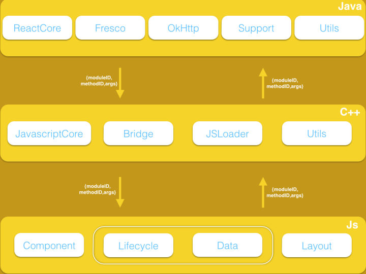
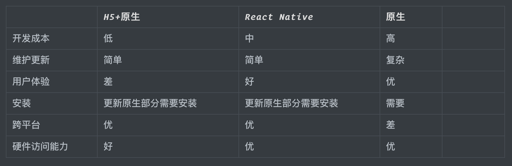
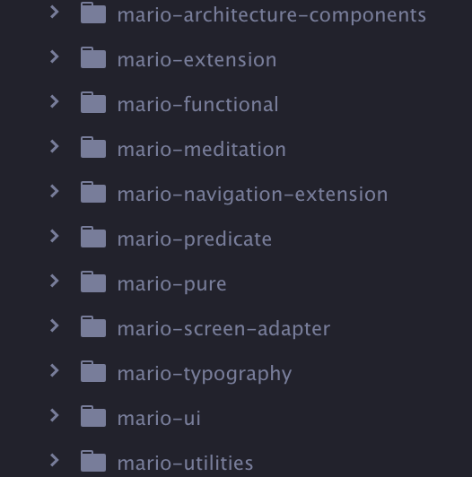
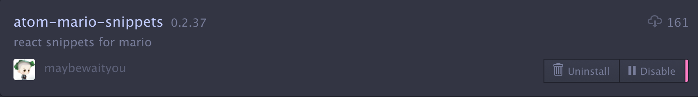

APP 跨平台开发技术分析
Created by 董春男
大纲
- 技术背景
- 技术方案
- 框架成熟度
- 行业技术统计
- React Native
- 公司案例与行业采用
- 技术积累与沉淀
- 总结与展望
技术背景
APP 跨平台开发是目前比较热门的方向，采用 Web 框架开发，以 Web 的开发体验快速构建应用，提高了迭代的效率。同时 Web 开发方式大多使用动态语言，能够绕过原生开发限制动态加载，因此具备热加载、热更新的能力。
技术方案
Cordova / WebView
利用 Android 和 iOS 上的 WebView 容器，APP 能够执行 html、css 和 js 脚本，展示 Web 页面。如果需要原生功能就添加 bridge 供 JavaScript 调用。具有开发效率高、跨平台、支持动态发布等特点。
React Native
React Native 这类方案，使用 JavaScript 来构建界面，在运行时翻译成原生组件展示出来，实际上所有界面都是用原生组件。支持跨平台，热加载，性能和用户体验高于 WebView，更接近原生应用，是当前热门的跨平台开发技术。
Flutter
Flutter 使用了一种全新的方式，自己重写了一个平台无关的渲染引擎，它只提供画布，所有的 UI 组件、渲染逻辑都是在这个引擎上处理的。最大程度上保证了各平台下的一致性，同时也拥有媲美原生的高性能体验。
框架成熟度
行业技术统计
全球 JS 技术框架调查
React Native
React Native 是 React 在原生移动应用平台的衍生产物，与 React 的区别在于虚拟 DOM 映射的对象是什么，React 中虚拟 DOM 最终会映射为浏览器 DOM 树，而 React Native 中虚拟 DOM 会通过 JavaScript Core 映射为原生控件树。
React Native架构分析
JavaScript Core 是一个 JavaScript 解释器，它在 React Native 中主要有两个作用：
- 为 JavaScript 提供运行环境
- 是 JavaScript 与原生应用之间通信的桥梁
React Native 中将虚拟 DOM 映射为原生控件的过程中分两步：
- 布局消息传递，将虚拟 DOM 布局信息传递给原生
- 原生根据布局信息通过对应的原生控件渲染控件树
至此，React Native 便实现了跨平台。 相对于混合应用，由于 React Native 是原生控件渲染，所以性能会比混合应用中 H5 好很多，同时 React Native 是 Web 开发技术栈，也只需维护一份代码
总结
公司案例与行业采用
案例1
移动营销服务平台 - 上海银行
差异化更新
案例2
建启善源 - 建设银行武汉开发中心
项目截图
同行业相关案例
- 智能风控项目 (风险助手) - 中国银行
- 上海银行手机银行 - 上海银行
- 信用卡营销 - 上海银行
- CRM - 上海银行
- 移动营销 - 百信银行
互联网公司采用情况
- 手机百度
- 手机 QQ，QQ 空间，QQ 音乐
- 京东商城，京东金融
- 携程 App
- 爱奇艺
- 美团
- 抖音
- 58 同城
- 去哪儿
- ...
技术积累与沉淀
应用主要技术栈 (React Native)
-
JS 层:
- typescript + 自定义数据流 (redux + redux-observable + rxjs + reselector) + 自定义框架
- typescript + 自定义数据流 (react-bloc)
- 原生层: 只提供基础服务 (拍照，百度地图，定位，轮询，外设调用等)
第三方库与工具
自定义插件与代码模板
VS Code:

Atom

交互式命令行工具

- 新建项目 (react/react native/koa)
- 新建业务模块
- 新建业务模块二级界面
- 新建第三方工具
总结与展望
总结
当我们选择一个技术时，社区生态是一个重要的考量。一个繁荣的社区，有很多成熟的工具、库、工程体系、最佳实践可以供我们使用和借鉴。无论从框架的成熟度，开发效率，社区，兼容性，动态性，性能等方面考虑，React Native 无疑是现阶段最适合的移动端跨平台开发的框架。
展望
- 我们将为命令行工具添加新的功能，直接生成原生相关模块, 并提供代码编写规范，自动实现注册原生模块功能, 使开发人员只需关注原生功能的实现。
- 我们将寻找使 React Native 开发的项目，直接生成 H5 页面的方法， 也就是说，同一份项目，能够生成 Android App，iOS App 和 HTML 页面，以适配更多的终端设备。
任重而道远，我们仍需要长期的奋斗。
Think you
感谢大家百忙之中抽出时间，希望大家有所收获。